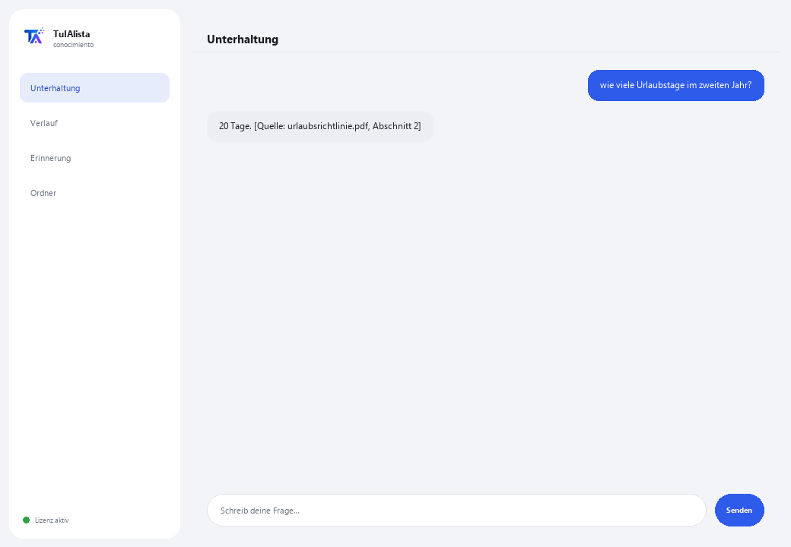

Agent für internes Wissen
Verwandelt alle Dokumente Ihres Unternehmens in eine Wissensdatenbank, die Fragen unter Angabe der Quelle beantwortet.
Was löst er und was brauchen Sie?
In jedem Unternehmen ist Wissen verstreut: Richtlinien in einem PDF, Prozesse in einem Word-Dokument, Preise in einer Excel-Tabelle, die Einführung in einer PowerPoint-Präsentation. Die Antwort auf “wie viele Urlaubstage stehen mir zu” existiert, aber niemand weiß, in welcher Datei. Dieser Agent indiziert alles und antwortet unter genauer Angabe der Herkunft jeder Angabe.
- Sie brauchen: Ihren Lizenzschlüssel (TIA-XXXX-XXXX-XXXX-XXXX) und den Ordner mit den internen Dokumenten. Kein Python, keine technischen Kenntnisse.
- Erstes Ergebnis in weniger als 5 Minuten: Sie installieren, aktivieren, wählen Ihren Ordner und fragen direkt, was Sie wissen müssen.
- Das Wissen Ihres Unternehmens verlässt nie Ihren Computer — der Index wird lokal erstellt und abgefragt.
soporte@tuialista.com oder besuche tuialista.com/soporte — wir antworten normalerweise am selben Werktag.1 Was dieser Agent tut
Sie zeigen ihm den Ordner mit den internen Dokumenten und der Agent:
- Indiziert sie alle (PDF, Word, Excel, CSV, PowerPoint, Text, Markdown) in einer lokalen Datenbank.
- Teilt jedes Dokument in Fragmente, um den genauen antwortenden Teil zu finden.
- Beantwortet Fragen Ihres Teams unter ausschließlicher Verwendung dieser Dokumente und zitiert immer, woher jede Angabe stammt ([Quelle: Datei, Abschnitt]).
- Fasst ein Thema zusammen, indem es konsolidiert, was mehrere Dokumente sagen.
- Erkennt Wissenslücken: Themen, die oft erwähnt werden, aber kein eigenes Dokument haben.
- Erstellt ein Verzeichnis der Verantwortlichen: wer für was zuständig ist.
Das Wesentliche: Wenn die Antwort nicht in den Dokumenten steht, sagt der Agent es, anstatt sie zu erfinden.
2 Installation (2 Minuten)
Für Windows. Keine dauerhafte Internetverbindung nötig, nichts wird in die Cloud hochgeladen.
Laden Sie das Installationsprogramm von tuialista.com/descargar herunter (Wissens-Agent) und öffnen Sie es. Es erstellt eine Verknüpfung mit dem Logo auf Ihrem Desktop — kein Python oder Terminal erforderlich.
Doppelklicken Sie auf das neue Symbol. Fügen Sie Ihren Lizenzschlüssel ein (er wurde Ihnen beim Kauf per E-Mail zugesandt) und klicken Sie auf Aktivieren. Sie sehen ein grünes Häkchen, wenn er gültig ist.
Wählen Sie den Ordner mit Ihren internen Dokumenten aus und klicken Sie auf Agent jetzt verwenden. Beim nächsten Mal startet er direkt — er merkt sich Ihren Schlüssel und Ihren Ordner.
3 So verwenden Sie ihn
Der Agent öffnet ein Chat-Fenster, wie eine Messaging-App — kein schwarzer Programmierer-Bildschirm. Seine Hauptverwendung ist das direkte Fragen im Textfeld, und er hat auch einige Erkundungsbefehle:

> freie Frage?Die Hauptverwendung. Schreiben Sie Ihre Frage so, wie sie ist, z. B.: wie viele Urlaubstage stehen im zweiten Jahr zu? — der Agent sucht in den Dokumenten und antwortet unter Angabe der Quelle. Fehlt die Information, sagt er es Ihnen, statt sie zu erfinden.
> ThemenListet die Kategorien/Bereiche auf, die Ihre Dokumente abdecken (Richtlinien, Prozesse, Sicherheit, HR, Finanzen...) und in wie vielen Dateien jede erscheint.
> Zusammenfassung <Thema>Fasst zusammen, was mehrere Dokumente über ein Thema sagen, und erstellt eine Management-Zusammenfassung, wobei Widersprüche angezeigt werden, falls vorhanden. Z. B.: Zusammenfassung urlaub.
> LückenThemen, die oft erwähnt werden, aber kein eigenes Dokument haben — nützlich, um zu wissen, welche Richtlinien geschrieben werden sollten.
> VerzeichnisNamen von Personen, die als verantwortlich/zuständig/Kontakt erscheinen, und in welchen Dokumenten.
> analysieren <Datei>Zeilen, Anzahl der Fragmente und eine Vorschau eines indizierten Dokuments.
> beendenBeendet die Sitzung (funktioniert auch mit exit).
4 Beispiele für häufige Anwendungen
Eine Frage des Teams klären
wie ist das Verfahren, um einen Einkauf über 10.000 USD zu beantragen? — Antwort mit genauer Angabe des Dokuments und Abschnitts.
Eine Zusammenfassung für die Einführung vorbereiten
Zusammenfassung sicherheit
Die Dokumentation prüfen
Themen → Lücken — Sie sehen, welche Bereiche gut abgedeckt sind und welche kaum Dokumentation haben.
Den Verantwortlichen finden
Verzeichnis
5 Häufig gestellte Fragen
Werden die Dokumente meines Unternehmens ins Internet hochgeladen?
Welche Formate akzeptiert er?
Zitiert er wirklich die Quelle?
Was passiert, wenn die Antwort nicht in den Dokumenten steht?
Was macht er, wenn zwei Dokumente sich widersprechen?
Ich habe neue Dokumente hinzugefügt, werden sie berücksichtigt?
Wie wählt er aus, welche Fragmente er verwendet?
Liest er ein gescanntes PDF?
In welcher Sprache antwortet er?
Verändert er meine Dokumente?
6 Problemlösung
Ein .pdf, .docx, .xlsx oder .pptx wird nicht indiziert
Zeigt “0 indizierte Dokumente”
Eine Antwort zitiert das falsche Dokument
Zeigt “Lizenz ungültig” oder fordert erneute Verbindung
“Keine KI-Anbieter konfiguriert”
Keine dieser Lösungen hat Ihr Problem behoben? Schreiben Sie uns direkt — wir schauen es uns gerne gemeinsam mit Ihnen an.
soporte@tuialista.com oder besuche tuialista.com/soporte — wir antworten normalerweise am selben Werktag.7 Datenschutz und Vertraulichkeit
Das Wissen Ihres Unternehmens verlässt nie Ihren Computer.
- Der Agent liest, teilt in Fragmente und indiziert die Dokumente lokal, auf Ihrem eigenen Gerät. Er lädt sie auf keinen Server hoch.
- Die Suchen, Themen, Lücken und das Verzeichnis werden auf Ihrem Gerät berechnet.
- Das Einzige, was über das Internet läuft, ist: (1) eine Überprüfung, dass Ihre Lizenz aktiv ist — die Ihre Dokumente nicht enthält —, und (2) beim Beantworten einer Frage oder Erstellen einer Zusammenfassung werden die relevantesten Fragmente an die KI-Engine gesendet, um die Antwort zu verfassen. Der Rest des Wissens bleibt lokal.